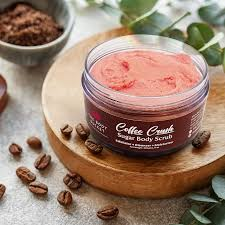
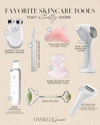
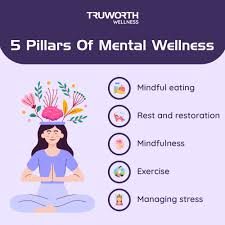
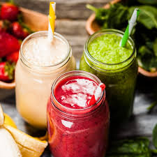

Responsive Landing Page
Self Care First
Your body is divine
This page is about self-care routine. Self-care is not about makeup or beauty standards. It's about embracing ourselves and loving who we are by taking care of our body and mind. Self-care is the deliberate practice of nurturing your physical, mental, and emotional well-being. It involves taking time to engage in activities that make you feel good, whether it's something as simple as a relaxing bath or a walk in nature, or something more structured like practicing mindfulness or meditation. The goal is to prioritize your needs and create a healthy balance in your life, ultimately leading to improved overall health and well-being. Here's a more detailed look at what self-care encompasses: Physical Well-being: This includes things like getting enough sleep, eating healthy, exercising regularly, and practicing good hygiene. Mental and Emotional Well-being: This involves engaging in activities that help you manage stress, reduce anxiety, and improve your mood, such as spending time with loved ones, practicing mindfulness, or pursuing hobbies. Social and Spiritual Well-being: This can involve connecting with others, practicing gratitude, or engaging in activities that bring a sense of purpose and meaning. In essence, self-care is about recognizing your needs and actively taking steps to meet them, regardless of how big or small those steps may be. It's a practice that can make a significant difference in your overall well-being and quality of life.
🧘 Yoga for Self-Care
Yoga is more than just physical exercise — it nurtures body, mind, and soul.
- Hatha Yoga – Great for beginners; focuses on basic poses and breathing techniques.
- Vinyasa Flow – A dynamic style that links breath to movement; ideal for those who like a workout.
- Yin Yoga – Slow, meditative, and perfect for deep stretching and emotional release.
- Restorative Yoga – Uses props to support the body in restful poses; excellent for stress relief and healing.
- Kundalini Yoga – Combines chanting, movement, and breathwork to awaken inner energy.
🛁 Self-Care Products
💡 Bath & Body
- Aromatherapy Bath Bombs
- Sugar or Coffee Scrubs
- Hydrating Oils
🕯 Ambience
- Scented Candles
- Essential Oil Diffuser
- Weighted Blanket
🚖 Face & Skin Care

- Clay Face Masks
- Facial Roller or Gua Sha
- Hydrating Sheet Masks
☕ Mindful Indulgence
- Herbal Teas
- Adaptogenic Hot Cocoa or Latte Blends
📓 Mental Wellness Tools
- Guided Journals
- Affirmation Cards
- Blue-Light Blocking Glasses
🤸 Yoga & Mindfulness Gear

- Eco-Friendly Yoga Mat
- Meditation Cushions
- Meditation App Subscription
🍝 Food as Self-Care
Food is nourishment. Mindful eating reconnects us with our body and intuition.
- Warm herbal teas
- Veggie & grain bowls
- Dark chocolate and nuts
- Yogurt, kimchi, fermented food
Mindful Eating Tips:
- Chew slowly
- Eat screen-free
- Listen to your body
🌿 Nourishing Self-Care Food Ideas
- Warm herbal teas like chamomile or peppermint
- Colorful nourish bowls with veggies and grains
- Superfood smoothies with chia or spirulina
- Dark chocolate and nuts as healthy treats
- Fermented foods like yogurt and kimchi
🍲 Cooking as a Ritual

Cooking can be a meditative act — light a candle, play your favorite playlist, and prepare your meals with love and presence.